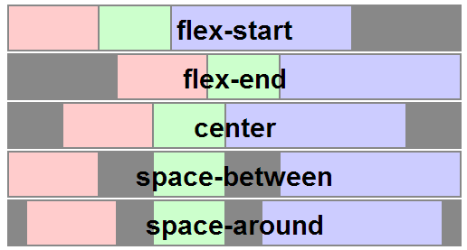

Flex Box
malei
介绍
Flexbox(伸缩布局)，诞生于2009，是 CSS3 中一个新的布局模式，是简单、强大的分配空间与对齐内容的工具，是 Web 应用与复杂的页面所需要的。下面将介绍 Flexbox 语法的技术细节。
Flexbox 好用的点
- 如果元素容器没有足够的空间，我们无需计算每个元素的宽度，就可以设置他们在同一行；
- 可以快速让他们布局在一列；
- 可以方便让他们对齐容器的左、右、中间等；
- 无需修改结构就可以改变他们的显示顺序；
- 如果元素容器设置百分比和视窗大小改变，不用提心未指定元素的确切宽度而破坏布局，因为容器中的每个子元素都可以自动分配容器的宽度或高度的比例。
Flexbox 3个阶段
// 2009 spec
display: -webkit-box;
display: -moz-box;
display: -o-box;
// 2012
display: -webkit-flexbox;
display: -moz-flexbox;
display: -ms-flexbox;
display: -o-flexbox;
// new spec
display: -webkit-flex;
display: -moz-flex;
display: -ms-flex;
display: -o-flex;
display: flex;

Flexbox 的组成
Flexbox 由 伸缩容器 和 伸缩项目 组成，一个设有「display:flex」或「display:inline-flex」的元素是一个伸缩容器，伸缩容器的子元素被称为伸缩项目，创建一个伸缩容器:
.flex-container {
display: -webkit-flex;
display: flex;
}

术语
- 主轴、主轴方向
- 主轴起点、主轴终点
- 主轴长度、主轴长度属性(伸缩项目)
- 侧轴、侧轴方向
- 侧轴起点、侧轴终点
- 侧轴长度、侧轴长度属性

伸缩行方向
默认情况下，伸缩行和文本方向一致：从左至右，从上往下，但是会受到 writing modes 的影响。详情请点击：#writing modes spec#
- direction：ltr | rtl
- unicode-bidi：normal | embed | bidi-override
- writing-mode：horizontal-tb | vertical-rl | vertical-lr | lr-tb | tb-rl
writing modes
伸缩项目的初始值：flex: 0 1 auto;
伸缩流的方向
flex-direction 允许你更改伸缩容器的主轴方向。flex-direction 的默认值是 row。该值表示伸缩项目根据书写模式的方向布局。
- row-reverse: 主轴起点和主轴终点交换。如果书写模式是从左至右，伸缩项目则是从右往左显示。
- column: 主轴和侧轴交换。如果书写系统是垂直的，那么伸缩项目也是垂直显示的。
- column-reverse: 和 column 一样，但是方向相反。
flex-direction
mix
当 writing-mode 和 flex-direction 混合存在时
内容溢出？
- 因为伸缩项目的初始值：flex: 0 1 auto;
- 依次代表 扩展比率、收缩比率、伸缩基准值
- 扩展比率为 0，是不可扩展的，这就需要设置 伸缩性(flex)
- 伸缩项目的默认尺寸？
伸缩项目
一个伸缩项目是一个伸缩容器的子元素。伸缩容器中的文本也被视为一个伸缩项目。
伸缩项目中内容与普通流一样。
伸缩项目都有一个 主轴长度(Main Size) 和一个 侧轴长度(Cross Size)。主轴长度是伸缩项目在主轴上的尺寸。侧轴长度是伸缩项目在侧轴上的尺寸。或者说，一个伸缩项目的宽或高取决于伸缩容器的轴，可能就是它的主轴长度或侧轴长度。
<div class="flex-container">
<!-- 伸缩项目：块级子元素 -->
<div class="item1">块级</div>
<!-- 伸缩项目：浮动元素 ― 用户代理会忽略浮动 -->
<div class="item2" style="float: left;">浮动</div>
<!-- 伸缩项目：包着行内内容的匿名块盒 -->
匿名
<!-- 伸缩项目：行内子元素 -->
<span class="item4">行内</span>
</div>
demo
下面 看 伸缩项目的 伸缩性 flex
伸缩性 flex
伸缩布局决定性的特性是让伸缩项目「可伸缩」，也就是让伸缩项目的宽度或高度自动填充剩余的空间。这可以以「flex」属性完成。一个伸缩容器会等比地按照各伸缩项目的扩展比率分配剩余空间，也会按照收缩比率缩小各项目以避免溢出。
取值： none | flex-grow flex-shrink flex-basis 依次代表 扩展比率、收缩比率、伸缩基准值
其中 flex:none; 等同于 flex: 0 0 auto;
flex 常见值
- flex: 0 auto 或者 flex: initial -> flex: 0 1 auto
- flex: auto -> flex: 1 1 auto
如果所有项目均为「flex: auto」、「flex: initial」或「flex: none」，则在项目尺寸决定后，剩余的正空间会被平分给是「flex: auto」的项目
- flex: num -> flex: num 1 0px;
说明见下一页
该值使元素可伸缩，并将伸缩基准值设置为零，导致该项目会根据设置的比率占用伸缩容器的剩余空间。如果一个伸缩容器里的所有项目都使用此模式，则它们的尺寸会正比于指定的伸缩比率。 默认状态下，伸缩项目不会收缩至比其最小内容尺寸（最长的英文词或是固定尺寸元素的长度）更小。网页作者可以靠设置「min-width」或「min-height」属性来改变这个默认状态
伸缩项目的默认尺寸
- 没有指定就是 min-content
- 指定就是相应 width
- 以上可扩展、可收缩
- min-width max-width
- 前面一条可以相对的控制缩放
flex:auto;width比例
伸缩基准值
绝对伸缩
相对伸缩
对齐、换行、显示顺序
- 伸缩行换行 flex-wrap (flex-flow)
- 主轴对齐 justify-content
- 侧轴对齐 align-items align-self
- 显示顺序 order
- 用 auto 外边距对齐
- 堆栈伸缩行 align-content
flex-wrap
nowrap (默认) wrap wrap-reverse
flex-flow 是 flex-direction flex-wrap 的缩写
主轴对齐
justify-content: flex-start | flex-end | center | space-between | space-around
justify-content
侧轴对齐
align-items align-self
flex-start | flex-end | center | baseline | stretch 其中 align-self 多一个 auto

align-items align-self
堆栈伸缩行
align-content: flex-start | flex-end | center | space-between | space-around | stretch

用 auto 外边距对齐
一个 "auto" 的 margin 会合并剩余的空间。它可以用来把伸缩项目挤到其他位置。
margin-right: auto
这里我们在第一个伸缩项目上声明了 margin-right: auto;，导致了所有的剩余空间被合并到那个元素的右边去了
垂直居中问题
垂直居中问题_兼容hack
.main {
display: table;
height: 100%;
*position: relative;
*zoom: 1;
.hack {
display: table-cell;
vertical-align: middle;
*position: absolute;
*top: 50%;
*width: 100%;
.inner {
*position: relative;
*top: -50%;
}
}
}